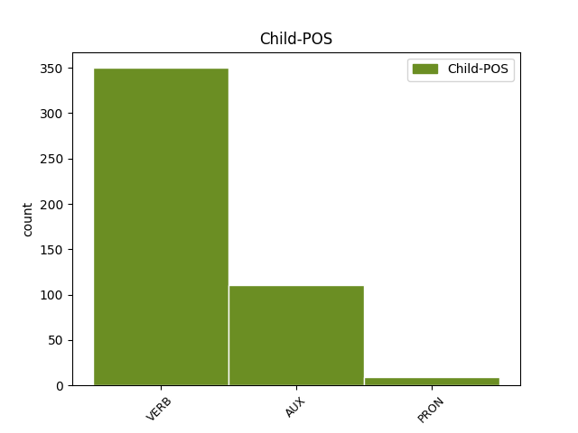

Distribution of features within this leaf

Agreement Rules sorted by frequency.
- When the dependent token is the modifer(mod) of the head token, and the head token is PRON and the dependent token is VERB.
1 Quo _ _ _ _ 0 _ _ _
2 genere _ _ _ _ 0 _ _ _
3 non _ _ _ _ 0 _ _ _
4 modo _ _ _ _ 0 _ _ _
5 Plautus _ _ _ _ 0 _ _ _
6 noster _ _ _ _ 0 _ _ _
7 et _ _ _ _ 0 _ _ _
8 Atticorum _ _ _ _ 0 _ _ _
9 antiqua _ _ _ _ 0 _ _ _
10 comoedia _ _ _ _ 0 _ _ _
11 sed _ _ _ _ 0 _ _ _
12 etiam _ _ _ _ 0 _ _ _
13 philosophorum _ _ _ _ 0 _ _ _
14 Socraticorum _ _ _ _ 0 _ _ _
15 libri _ _ _ _ 0 _ _ _
16 referti _ _ _ _ 0 _ _ _
17 sunt _ _ _ _ 0 _ _ _
18 multa _ _ _ _ 0 _ _ _
19 que _ _ _ _ 0 _ _ _
20 multorum _ _ _ _ 0 _ _ _
21 facete _ _ _ _ 0 _ _ _
22 dicta _ _ _ _ 0 _ _ _
23 ut _ _ _ _ 0 _ _ _
24 ea is PRON Pp Case=Nom|Gender=Neut|Number=Plur|Person=3|PronType=Prs 0 _ _ _
25 quae _ _ _ _ 0 _ _ _
26 a _ _ _ _ 0 _ _ _
27 sene _ _ _ _ 0 _ _ _
28 Catone _ _ _ _ 0 _ _ _
29 collecta _ _ _ _ 0 _ _ _
30 sunt _ _ _ _ 0 _ _ _
31 quae _ _ _ _ 0 _ _ _
32 vocant voco VERB V- Mood=Ind|Number=Plur|Person=3|Tense=Pres|VerbForm=Fin|Voice=Act 24 mod _ ref=1.104
33 ἀποφθέγματα _ _ _ _ 0 _ _ _
1 id is PRON Pp Case=Nom|Gender=Neut|Number=Sing|Person=3|PronType=Prs 0 _ _ _
2 enim _ _ _ _ 0 _ _ _
3 maxime _ _ _ _ 0 _ _ _
4 quemque _ _ _ _ 0 _ _ _
5 decet _ _ _ _ 0 _ _ _
6 quod _ _ _ _ 0 _ _ _
7 est sum AUX V- Mood=Ind|Number=Sing|Person=3|Tense=Pres|VerbForm=Fin|Voice=Act 1 mod _ ref=1.113
8 cuiusque _ _ _ _ 0 _ _ _
9 maxime _ _ _ _ 0 _ _ _
10 suum _ _ _ _ 0 _ _ _
1 Sed _ _ _ _ 0 _ _ _
2 cum _ _ _ _ 0 _ _ _
3 statuissem _ _ _ _ 0 _ _ _
4 scribere _ _ _ _ 0 _ _ _
5 ad _ _ _ _ 0 _ _ _
6 te _ _ _ _ 0 _ _ _
7 aliquid _ _ _ _ 0 _ _ _
8 hoc _ _ _ _ 0 _ _ _
9 tempore _ _ _ _ 0 _ _ _
10 multa _ _ _ _ 0 _ _ _
11 posthac _ _ _ _ 0 _ _ _
12 ab _ _ _ _ 0 _ _ _
13 eo is PRON Pp Case=Abl|Gender=Neut|Number=Sing|Person=3|PronType=Prs 0 _ _ _
14 ordiri _ _ _ _ 0 _ _ _
15 maxime _ _ _ _ 0 _ _ _
16 volui _ _ _ _ 0 _ _ _
17 quod _ _ _ _ 0 _ _ _
18 et _ _ _ _ 0 _ _ _
19 aetati _ _ _ _ 0 _ _ _
20 tuae _ _ _ _ 0 _ _ _
21 esset sum AUX V- Aspect=Imp|Mood=Sub|Number=Sing|Person=3|Tense=Past|VerbForm=Fin|Voice=Act 13 appos _ ref=1.4
22 aptissimum _ _ _ _ 0 _ _ _
23 et _ _ _ _ 0 _ _ _
24 auctoritati _ _ _ _ 0 _ _ _
25 meae _ _ _ _ 0 _ _ _
1 in _ _ _ _ 0 _ _ _
2 quibus _ _ _ _ 0 _ _ _
3 enim _ _ _ _ 0 _ _ _
4 eadem _ _ _ _ 0 _ _ _
5 studia _ _ _ _ 0 _ _ _
6 sunt sum AUX V- Mood=Ind|Number=Plur|Person=3|Tense=Pres|VerbForm=Fin|Voice=Act 10 det _ ref=1.56
7 eaedem _ _ _ _ 0 _ _ _
8 voluntates _ _ _ _ 0 _ _ _
9 in _ _ _ _ 0 _ _ _
10 iis is PRON Pp Case=Abl|Gender=Masc|Number=Plur|Person=3|PronType=Prs 0 _ _ _
11 fit _ _ _ _ 0 _ _ _
12 ut _ _ _ _ 0 _ _ _
13 aeque _ _ _ _ 0 _ _ _
14 quisque _ _ _ _ 0 _ _ _
15 altero _ _ _ _ 0 _ _ _
16 delectetur _ _ _ _ 0 _ _ _
17 ac _ _ _ _ 0 _ _ _
18 se _ _ _ _ 0 _ _ _
19 ipso _ _ _ _ 0 _ _ _
20 efficitur _ _ _ _ 0 _ _ _
21 que _ _ _ _ 0 _ _ _
22 id _ _ _ _ 0 _ _ _
23 quod _ _ _ _ 0 _ _ _
24 Pythagoras _ _ _ _ 0 _ _ _
25 vult _ _ _ _ 0 _ _ _
26 in _ _ _ _ 0 _ _ _
27 amicitia _ _ _ _ 0 _ _ _
28 ut _ _ _ _ 0 _ _ _
29 unus _ _ _ _ 0 _ _ _
30 fiat _ _ _ _ 0 _ _ _
31 ex _ _ _ _ 0 _ _ _
32 pluribus _ _ _ _ 0 _ _ _
1 His _ _ _ _ 0 _ _ _
2 adductis _ _ _ _ 0 _ _ _
3 in _ _ _ _ 0 _ _ _
4 eis is PRON Pp Case=Abl|Gender=Masc|Number=Plur|Person=3|PronType=Prs 0 _ _ _
5 filio _ _ _ _ 0 _ _ _
6 propinquis _ _ _ _ 0 _ _ _
7 que _ _ _ _ 0 _ _ _
8 eius is PRON Pp Case=Gen|Gender=Masc|Number=Sing|Person=3|PronType=Prs 4 det _ ref=5.4.2
9 omnibus _ _ _ _ 0 _ _ _
10 quos _ _ _ _ 0 _ _ _
11 nominatim _ _ _ _ 0 _ _ _
12 evocaverat _ _ _ _ 0 _ _ _
13 consolatus _ _ _ _ 0 _ _ _
14 Indutiomarum _ _ _ _ 0 _ _ _
15 hortatus _ _ _ _ 0 _ _ _
16 que _ _ _ _ 0 _ _ _
17 est _ _ _ _ 0 _ _ _
18 uti _ _ _ _ 0 _ _ _
19 in _ _ _ _ 0 _ _ _
20 officio _ _ _ _ 0 _ _ _
21 maneret _ _ _ _ 0 _ _ _
1 si _ _ _ _ 0 _ _ _
2 non _ _ _ _ 0 _ _ _
3 impetraret _ _ _ _ 0 _ _ _
4 sese se PRON Pk Case=Acc|Gender=Masc|Number=Sing|Person=3|PronType=Prs|Reflex=Yes 0 _ _ _
5 quoniam _ _ _ _ 0 _ _ _
6 Marco _ _ _ _ 0 _ _ _
7 Messala _ _ _ _ 0 _ _ _
8 Marco _ _ _ _ 0 _ _ _
9 Pisone _ _ _ _ 0 _ _ _
10 consulibus _ _ _ _ 0 _ _ _
11 senatus _ _ _ _ 0 _ _ _
12 censuisset _ _ _ _ 0 _ _ _
13 uti _ _ _ _ 0 _ _ _
14 quicumque _ _ _ _ 0 _ _ _
15 Galliam _ _ _ _ 0 _ _ _
16 provinciam _ _ _ _ 0 _ _ _
17 obtineret _ _ _ _ 0 _ _ _
18 quod _ _ _ _ 0 _ _ _
19 commodo _ _ _ _ 0 _ _ _
20 rei _ _ _ _ 0 _ _ _
21 publicae _ _ _ _ 0 _ _ _
22 facere _ _ _ _ 0 _ _ _
23 posset _ _ _ _ 0 _ _ _
24 Haeduos _ _ _ _ 0 _ _ _
25 ceteros _ _ _ _ 0 _ _ _
26 que _ _ _ _ 0 _ _ _
27 amicos _ _ _ _ 0 _ _ _
28 populi _ _ _ _ 0 _ _ _
29 Romani _ _ _ _ 0 _ _ _
30 defenderet _ _ _ _ 0 _ _ _
31 se se PRON Pk Case=Acc|Gender=Masc|Number=Sing|Person=3|PronType=Prs|Reflex=Yes 4 appos _ ref=1.35.4
32 Haeduorum _ _ _ _ 0 _ _ _
33 iniurias _ _ _ _ 0 _ _ _
34 non _ _ _ _ 0 _ _ _
35 neglecturum _ _ _ _ 0 _ _ _
1 scire _ _ _ _ 0 _ _ _
2 se _ _ _ _ 0 _ _ _
3 illa _ _ _ _ 0 _ _ _
4 esse _ _ _ _ 0 _ _ _
5 vera _ _ _ _ 0 _ _ _
6 ne _ _ _ _ 0 _ _ _
7 c _ _ _ _ 0 _ _ _
8 quemquam _ _ _ _ 0 _ _ _
9 ex _ _ _ _ 0 _ _ _
10 eo _ _ _ _ 0 _ _ _
11 plus _ _ _ _ 0 _ _ _
12 quam _ _ _ _ 0 _ _ _
13 se _ _ _ _ 0 _ _ _
14 doloris _ _ _ _ 0 _ _ _
15 capere _ _ _ _ 0 _ _ _
16 propterea _ _ _ _ 0 _ _ _
17 quod _ _ _ _ 0 _ _ _
18 cum _ _ _ _ 0 _ _ _
19 ipse ipse PRON Pp Case=Nom|Gender=Masc|Number=Sing|Person=3|PronType=Prs 0 _ _ _
20 gratia _ _ _ _ 0 _ _ _
21 plurimum _ _ _ _ 0 _ _ _
22 domi _ _ _ _ 0 _ _ _
23 atque _ _ _ _ 0 _ _ _
24 in _ _ _ _ 0 _ _ _
25 reliqua _ _ _ _ 0 _ _ _
26 Gallia _ _ _ _ 0 _ _ _
27 ille _ _ _ _ 0 _ _ _
28 minimum _ _ _ _ 0 _ _ _
29 propter _ _ _ _ 0 _ _ _
30 adulescentiam _ _ _ _ 0 _ _ _
31 posset possum VERB V- Aspect=Imp|Mood=Sub|Number=Sing|Person=3|Tense=Past|VerbForm=Fin|Voice=Act 19 orphan _ ref=1.20.2
32 per _ _ _ _ 0 _ _ _
33 se _ _ _ _ 0 _ _ _
34 crevisset _ _ _ _ 0 _ _ _
1 scio _ _ _ _ 0 _ _ _
2 et _ _ _ _ 0 _ _ _
3 confido _ _ _ _ 0 _ _ _
4 in _ _ _ _ 0 _ _ _
5 Domino _ _ _ _ 0 _ _ _
6 Iesu _ _ _ _ 0 _ _ _
7 quia _ _ _ _ 0 _ _ _
8 nihil _ _ _ _ 0 _ _ _
9 commune _ _ _ _ 0 _ _ _
10 per _ _ _ _ 0 _ _ _
11 ipsum _ _ _ _ 0 _ _ _
12 nisi _ _ _ _ 0 _ _ _
13 ei is PRON Pp Case=Dat|Gender=Masc|Number=Sing|Person=3|PronType=Prs 0 _ _ _
14 qui _ _ _ _ 0 _ _ _
15 existimat existimo VERB V- Mood=Ind|Number=Sing|Person=3|Tense=Pres|VerbForm=Fin|Voice=Act 13 dislocated _ ref=ROM_14.14
16 quid _ _ _ _ 0 _ _ _
17 commune _ _ _ _ 0 _ _ _
18 esse _ _ _ _ 0 _ _ _
19 illi _ _ _ _ 0 _ _ _
20 commune _ _ _ _ 0 _ _ _
21 est _ _ _ _ 0 _ _ _
Disagree Examples:
1 quemcumque _ _ _ _ 0 _ _ _
2 osculatus _ _ _ _ 0 _ _ _
3 fuero sum AUX V- Aspect=Perf|Mood=Ind|Number=Sing|Person=1|Tense=Fut|VerbForm=Fin|Voice=Act 4 mod _ ref=MARK_14.44
4 ipse ipse PRON Pp Case=Nom|Gender=Masc|Number=Sing|Person=3|PronType=Prs 0 _ _ _
5 est _ _ _ _ 0 _ _ _
1 in _ _ _ _ 0 _ _ _
2 quamcumque _ _ _ _ 0 _ _ _
3 civitatem _ _ _ _ 0 _ _ _
4 intraveritis intro VERB V- Aspect=Perf|Mood=Ind|Number=Plur|Person=2|Tense=Fut|VerbForm=Fin|Voice=Act 12 mod _ ref=LUKE_10.10
5 et _ _ _ _ 0 _ _ _
6 non _ _ _ _ 0 _ _ _
7 receperint _ _ _ _ 0 _ _ _
8 vos _ _ _ _ 0 _ _ _
9 exeuntes _ _ _ _ 0 _ _ _
10 in _ _ _ _ 0 _ _ _
11 plateas _ _ _ _ 0 _ _ _
12 eius is PRON Pp Case=Gen|Gender=Fem|Number=Sing|Person=3|PronType=Prs 0 _ _ _
13 dicite _ _ _ _ 0 _ _ _
1 quid _ _ _ _ 0 _ _ _
2 autem _ _ _ _ 0 _ _ _
3 et _ _ _ _ 0 _ _ _
4 a _ _ _ _ 0 _ _ _
5 vobis vos PRON Pp Case=Abl|Gender=Masc|Number=Plur|Person=2|PronType=Prs 0 _ _ _
6 ipsis ipse PRON Pp Case=Abl|Number=Plur|Person=3|PronType=Prs 5 det _ ref=LUKE_12.57
7 non _ _ _ _ 0 _ _ _
8 iudicatis _ _ _ _ 0 _ _ _
9 quod _ _ _ _ 0 _ _ _
10 iustum _ _ _ _ 0 _ _ _
11 est _ _ _ _ 0 _ _ _
1 si _ _ _ _ 0 _ _ _
2 haec _ _ _ _ 0 _ _ _
3 facis _ _ _ _ 0 _ _ _
4 manifesta _ _ _ _ 0 _ _ _
5 te tu PRON Pp Case=Acc|Gender=Masc|Number=Sing|Person=2|PronType=Prs 0 _ _ _
6 ipsum ipse PRON Pp Case=Acc|Gender=Masc|Number=Sing|Person=3|PronType=Prs 5 det _ ref=JOHN_7.4
7 mundo _ _ _ _ 0 _ _ _
1 Pater _ _ _ _ 0 _ _ _
2 sancte _ _ _ _ 0 _ _ _
3 serva _ _ _ _ 0 _ _ _
4 eos is PRON Pp Case=Acc|Gender=Masc|Number=Plur|Person=3|PronType=Prs 0 _ _ _
5 in _ _ _ _ 0 _ _ _
6 nomine _ _ _ _ 0 _ _ _
7 tuo _ _ _ _ 0 _ _ _
8 quos _ _ _ _ 0 _ _ _
9 dedisti do VERB V- Aspect=Perf|Mood=Ind|Number=Sing|Person=2|Tense=Past|VerbForm=Fin|Voice=Act 4 mod _ ref=JOHN_17.11
10 mihi _ _ _ _ 0 _ _ _
11 ut _ _ _ _ 0 _ _ _
12 sint _ _ _ _ 0 _ _ _
13 unum _ _ _ _ 0 _ _ _
14 sicut _ _ _ _ 0 _ _ _
15 et _ _ _ _ 0 _ _ _
16 nos _ _ _ _ 0 _ _ _